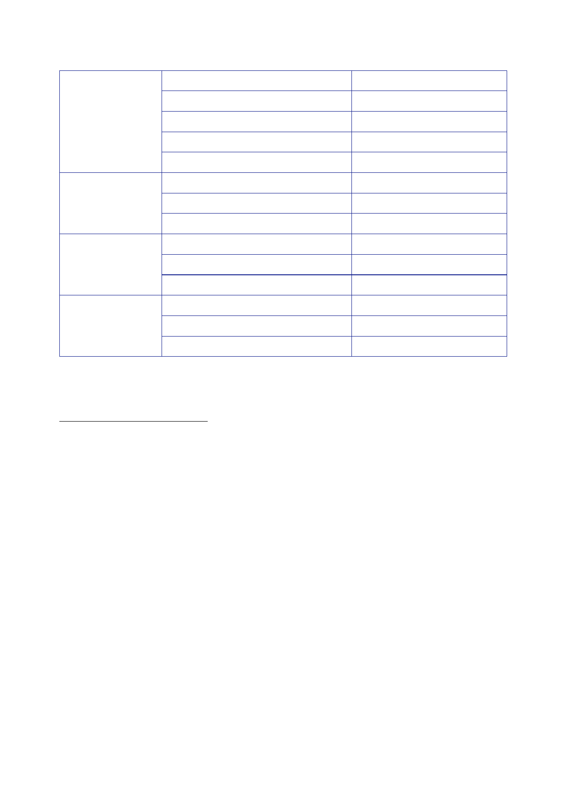

The Report
of the Iraq Inquiry
Op TELIC
IV
Op TELIC
V
Op TELIC
VI
Op TELIC
VII
31
May
17
June
21
July
21
October
25
October
29
November
21 January
2005
7
February
25
May
31
May
10
October
November
9 March
2006
13
March
209
The
National Archives, [undated], ‘Operations in Iraq: Facts and
Figures’. The figure describes UK
military
personnel deployed in Iraq.
210
House of
Commons, Official
Report, 17 June
2004, column 49WS. The figure includes a net increase
of around
270 personnel “in theatre”.
211
House of
Lords, Official
Report, 21 July
2004, column WA45. The figure describes British troops
deployed in
Iraq.
212
House of
Lords, Official
Report, 21
October 2004, column 980. The figure describes “our
deployment
in Iraq”.
213
House of
Commons, Official
Report, 25
October 2004, column 1128. The figure describes UK
Armed
Forces
personnel deployed in Iraq.
214
House of
Commons, Official
Report, 29
November 2004, column 343. The figure describes UK
troops
deployed in
Iraq.
215
Minute DJC
AD Pol 1 to APS/SofS [MOD], 21 January 2005, ‘Iraq: Planning for
the Replacement of
Dutch
Forces in Al Muthanna’. The document refers to a further 800
personnel supporting Op TELIC
elsewhere.
216
House of
Commons, Official
Report, 7
February 2005, columns 1168-1169. The figure refers to
troops
in Iraq.
217
House of
Lords, Official
Report, 25 May
2005, column WS11. The figure describes troops in
Iraq.
218
The
National Archives, [undated], ‘Operations in Iraq: Facts and
Figures’. The figure describes UK
military
personnel deployed in Iraq; House of Commons, Official
Report, 25 May
2005, column 15WS.
219
House of
Lords, Official
Report, 10
October 2005, column 35. The figure describes troops in
Iraq.
220
House of
Lords, Official
Report, 10
October 2005, column 35. The figure describes troops in
Iraq.
221
Minute SofS
[MOD] to Prime Minister, 9 March 2006, ‘Iraq: Force Level Review
and Announcement’.
The figure
describes overall numbers of personnel in theatre.
222
House of
Lords, Official
Report, 13 March
2006, columns 1008-1009. The figure is constructed
from
description
of a reduction of 800 personnel to just over 7,000 British forces
in Iraq.
466